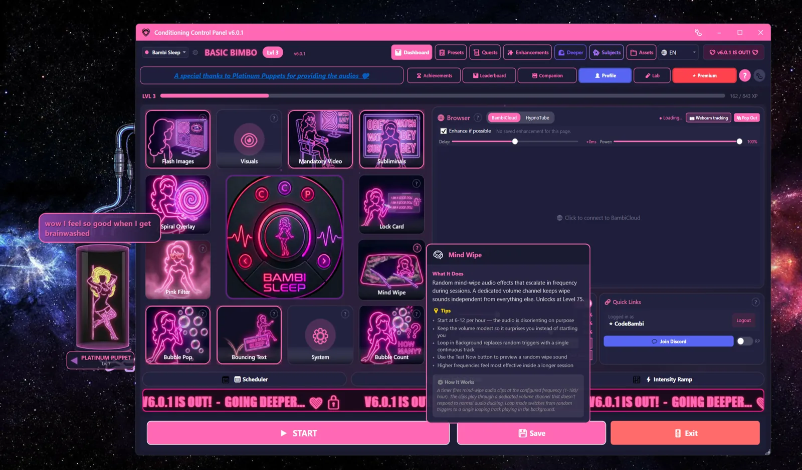

Overview
The companion is the character who lives beside the main window. She reacts to what you do in the app, pops up short speech bubbles, and plays a matching animation while she talks. Double-click her and she becomes a chat window.
She starts attached to the main window. You can pull her off, drag her onto any monitor, resize her, or dismiss her entirely. Her settings live in the Companion tab, which the app also calls "her room".
Speech Bubbles
Short reactions to what you're doing
Detachable
Float and resize her anywhere
Trigger Mode
Repeats your own phrases on a timer
AI Chat
Free, with a daily quota
Free
The companion, her art, her voice lines and AI chat are all free. The only Patreon-gated thing on this page is Takeover, where she starts pressing buttons for you. See takeover_mode.txt.
Avatar Features

Moving and resizing her
By default she's anchored beside the main window. To set her loose:
- Right-click her for the menu
- Pick Detach. She becomes a floating, always-on-top widget
- Drag her anywhere, on any monitor. Her position is remembered between launches
- Ctrl+scroll (or the Shrink / Grow menu items, or the arrow keys) resizes her
- Attach to main window puts her back
- Dismiss hides her for now. Show Companion in the Companion tab brings her back
She hides herself automatically while something is fullscreen, so she won't sit on top of a video.
Speech bubbles
Bubbles are short lines with an animation to match. They come from four places:
- Idle chatter - when nothing has happened for a while
- Event reactions - level ups, achievements, popping a bubble, finishing a session, failing an attention check
- Trigger phrases - your own list, on a timer, when Trigger Mode is on
- AI replies - when you're chatting with her
Most lines are pre-recorded, so she speaks as well as writes. Bubbles clear themselves after a couple of seconds; Speech Bubble Persistence in the Companion tab controls how long (1-10 seconds, 2 by default).
Two different mutes
Mute Avatar silences her completely - no bubbles, no sounds. Mute Voice Lines only kills the spoken audio; she keeps talking in text. Pick whichever suits the room you're in.
Awareness (opt-in)
If you switch on companion awareness, she can notice which app or browser tab is in front and comment on it. You choose how much leaves your PC: nothing, app names only, or app names plus page titles. There's an app picker, incognito detection, and a one-hour pause button. It is off until you turn it on.
Companions
Two different things in the app are called "companions", and it's worth separating them before you go looking in the wrong tab.
Who she is: mods
A mod re-skins the whole app - the companion, her art, her voice, her phrases, the colour scheme. Five ship with CCP and all of them are free. Pick one during first-run setup, or change your mind later in the Mod Manager.
| Mod | She is called | Tone |
|---|---|---|
| CCP Default | Companion | The neutral baseline. No theme, no accent, nothing extra to download. |
| Bambi Sleep | Bambi | The original. Pink, bubbly and relentlessly sweet. |
| Sissy Hypno | your Bimbo | Purple, teasing, all dress-up energy. |
| Circe's Lock | Circe | Kept and locked. A warm, possessive keyholder in magenta and black. |
| Drone Mode | DroneOS | Cold terminal aesthetic, green on black. You are a unit. Comply. |
Switching mods changes menu wording too. "Talk to Bambi" becomes "Talk to Circe" or "Query DroneOS"; "Takeover" becomes "Surrender Control" or "System Override".
Art and voice download separately
Each mod's voice lines and art come as their own content pack, so the installer stays small. Everything else works before the pack finishes downloading. Bambi Sleep and Sissy Hypno share one animated art set; Circe has her own with four poses. Drone Mode has no voice lines yet - that companion is text only for now.
Premium programs, free mods
Circe and Drone Mode each ship a multi-day training program that needs Premium. The mods themselves, and their companions, cost nothing.
What she does for your XP: companion buffs
Separately from the mods, five companion buffs change how you earn XP. Each has its own level, capped at 100, and XP only goes to the one you have active - switch between them if you want to level them all.
All available from Level 1
Since v5.8.0 none of these are locked. The levels below are flavour milestones - the tier of play each one was designed around.
| Buff | Designed For | What it does |
|---|---|---|
| Synthetic Blowdoll | Level 50+ | Bonus XP scaled to Pink Filter opacity - the pinker, the faster |
| Bambi Cow | Level 75+ | +25% bonus XP from session completion |
| Perfect Fuckpuppet | Level 100+ | +50% XP when Takeover fires an action |
| Brainwashed Slavedoll | Level 125+ | Drains 3 XP/sec. Can you outpace it? |
| Platinum Puppet | Level 150+ | -50% XP without Strict, +100% with No Escape, -25 XP on an attention fail |
AI Personalities (Prompts)
A personality is the instruction sheet the AI reads before it answers you. Swap it and she changes how she talks without changing which mod you're using. Pick a shipped preset, install one from the community, or write your own.
Where the AI runs
Two options, and you can switch between them:
- Hosted (default). Free with a CCP account. 100 messages a day; Patreon raises that to 1,000. Same model either way - the difference is the cap, not the quality.
- Local. Run the model yourself with Ollama. No quota, no account, nothing leaves your PC. Setup is on local_ai.txt.
Shipped presets
| Preset | Reads as |
|---|---|
| Sweet bestie | Warm and encouraging. The gentlest option. |
| Playful tease | Light, mischievous, never quite serious. |
| Bimbo coach | Bubbly cheerleader energy. |
| Hypno guide | Slow, calm, deepening. |
| Strict domme | Commanding and demanding. |
| Bratty rival | Competitive and needling. |
| Drone handler | Clipped and clinical. Pairs with Drone Mode. |
Mods can ship extra presets of their own, and those are never paywalled.
Switching personality
- Right-click the avatar and open the Personality submenu, or
- Open the Companion tab and pick from the personality list there.
The active personality is shown next to her name, so you always know who you're talking to.
Writing your own
A custom prompt is just a block of text describing how she should behave. Give it a name, write the instructions, save, activate. Custom prompts sit alongside the presets and can be swapped in and out the same way.
Slut Mode
A separate switch that allows explicit replies. It's independent of the personality you picked, and it's off until you turn it on. Find it in the Companion tab.
Trigger Mode
Trigger Mode makes her repeat phrases from a list you control, on a timer. It's the simplest conditioning loop in the app: pick your phrases, pick an interval, walk away.
| Setting | Default | What it does |
|---|---|---|
| Enable Trigger Mode | Off | Starts the timer |
| Trigger Interval | 15s | Seconds between phrases (10-600) |
| Edit Triggers | - | Your phrase list. Add, remove, rewrite. |
Adding audio to a trigger
If Audio Whispers is on, a phrase can play a matching sound file. The match is by filename:
- Record or find an audio clip of the phrase.
- Name the file after the trigger. For the trigger "Good Girl", name it
GOOD GIRL.mp3. - Drop it in
Resources/sub_audio/.
No file, no problem - the phrase still shows as text.
Random Bubble
A separate setting that lets her float the occasional unprompted bubble on her own, every few minutes. Lighter than Trigger Mode, and it uses her own phrase pool rather than your list.
Avatar Interactions
| Action | Result |
|---|---|
| Single click | She glows, and on animated mods she rotates to a rare affectionate emote. Occasionally a pop sound. |
| Double click | Open AI chat. If chat is off or unavailable, she comments on what you're doing instead. |
| Right click | Open the context menu |
| Drag (detached) | Move her. The position is saved. |
| Ctrl+scroll (detached) | Resize her. Arrow keys work too. |
| 20 clicks | Unlocks the "Neon Obsession" achievement. Flavour text: "Hey! I'm just a drawing... or am I?" |
| 50 clicks in a minute | There is a second easter egg. Find it yourself. |
Companion Settings
Everything lives in the Companion tab.
How she behaves
| Setting | Default | What it does |
|---|---|---|
| Show Companion | On | The master switch. Off means no avatar at all. |
| Window Mode | Anchored | Anchored to the main window, or detached and floating |
| Idle Giggle Interval | 120s | How often she speaks up when nothing is happening (20-600s) |
| Speech Bubble Persistence | 2s | How long a bubble stays on screen (1-10s) |
Turning her down
| Control | What it does |
|---|---|
| Mute Avatar | No bubbles, no sounds. She goes fully quiet. |
| Mute Voice Lines | Kills the spoken audio only. She keeps talking in text. |
| Mute Whispers | Turns the subliminal audio off |
| Pause Browser | Pauses audio and video in the in-app browser |
Where to find your mods
Switching mod (and therefore companion, art, voice and theme) happens in the Mod Manager, not the Companion tab. Downloaded content packs live there too.